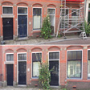
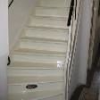
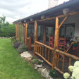

BuitenwerkBuitenschilderwerk
Bij buitenschilderwerk kan er gekozen worden uit verschillende verfsystemen, elk met eigen eigenschappen. In de meeste gevallen wordt hoogglans gekozen vanwege de duurzaamheid — maar de schilder adviseert u ter plekke over wat het beste bij uw situatie past.
Heeft u een badkamerraam of een woning met enkel glas, dan kan vocht van binnenuit het hout aantasten. In zulke gevallen is EPS of beits de betere keuze, omdat dit het vocht de ruimte geeft om te ontsnappen.
- Hoogglans — duurzaam en weersbestendig
- Zijdeglans — subtiel en verfijnd
- EPS (eenpotsysteem) — ideaal bij vochtproblemen
- Beits — ademt en beschermt hout optimaal
- Eigen steigers en ladders voor scherpe prijs
 Binnenwerk
Binnenwerk
Binnenschilderwerk
Bij binnenschilderwerk is het van essentieel belang dat de schilder extra secuur en netjes werkt. Daarom maakt J.J. Gieze Schilderwerk gebruik van een professioneel schuurapparaat met stof-afzuigsysteem — zodat er geen fijn stof vrijkomt tijdens de werkzaamheden.
Muren, plafonds en houtwerk worden zorgvuldig behandeld. Meubels en vloeren worden volledig afgedekt, zodat uw woning na afloop even schoon is als ervoor.
- Muren en plafonds — voorbehandeling en afwerking
- Houtwerk — kozijnen, deuren, trappen
- Stofvrij schuren met professioneel afzuigsysteem
- Zorgvuldige afdekking van meubels en vloeren
- Schone oplevering gegarandeerd

RenovatieRenovatie Schilderwerk
Renovatieschilderwerk vraagt om een grondige aanpak. Verouderd houtwerk, verweerde gevels of volledig versleten interieurs — Jeffrie Gieze heeft de ervaring en materialen om elk renovatieproject te een succesvol te maken.
Of het nu gaat om een gerenoveerde woning, een appartementencomplex of een bedrijfspand: elk project wordt met dezelfde zorgvuldigheid en toewijding uitgevoerd.
- Renovatie buitenwerk — gevels, kozijnen, houtwerk
- Renovatie binnenwerk — trappenhuizen, gangen, woonruimtes
- Voor particulieren en bedrijven
- Nieuwbouw en bestaande bouw
- Grondige voorbereiding voor optimaal eindresultaat

VerandaVeranda & Bijgebouwen
Houten veranda's, schuren en bijgebouwen zijn kwetsbaar voor weersinvloeden. Door regelmatig onderhoud en de juiste beschermlaag behoudt u de kwaliteit en levensduur van uw buitenhoutwerk.
J.J. Gieze Schilderwerk behandelt uw veranda of bijgebouw met de juiste verfsystemen — van beits tot hoogglans — afhankelijk van het houtsoort en uw persoonlijke voorkeur.
- Houten veranda's — alle typen en maten
- Schuren en bijgebouwen
- Persoonlijk advies over verfsysteem en kleur
- Duurzame bescherming tegen vocht en UV
- Vakkundige voorbereiding en afwerking